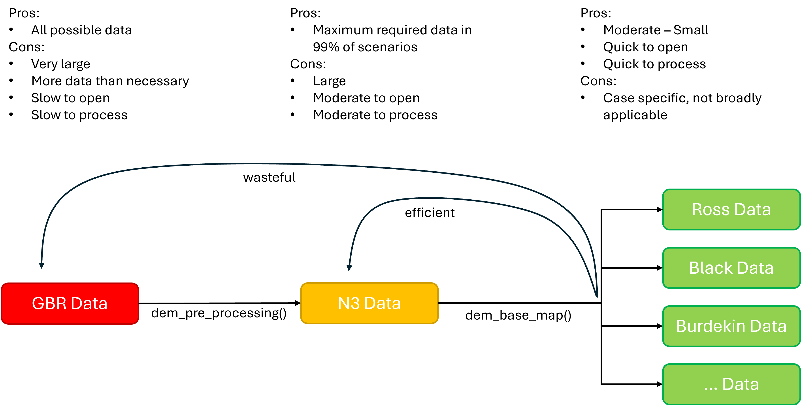
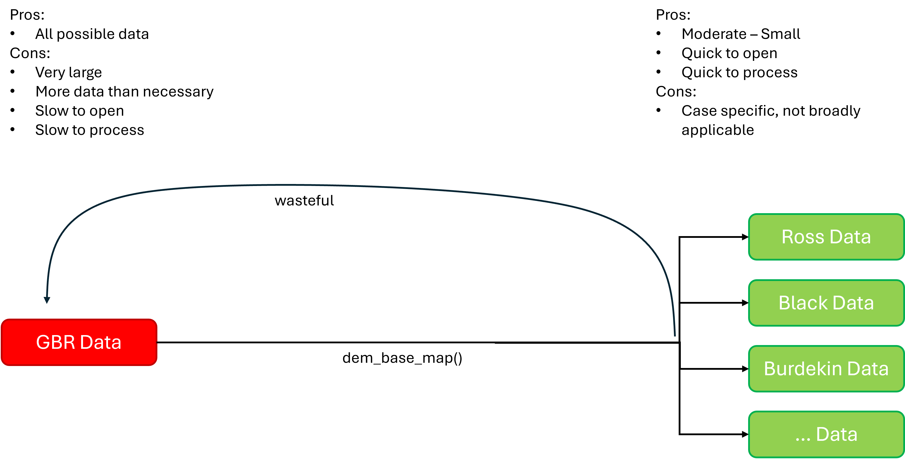

Digital Elevation Models
Digital_Elevation_Models.RmdIntroduction
A fun side project that was discovered when searching for useful datasets was the ability to create digital elevation models (3D maps) of the Northern Three Region. This work currently has no real bearing on producing technical reports or calculating report card scores, but can be used to complete the following tasks:
- Create visually interesting maps of a location
- Emphasize a feature related to height, such as a particular mountain and its influence on water dynamics
- Calculate custom catchments based on water dynamics
Four functions have been written to assist in the completion of these tasks, they are:
- dem_pre_processing()
- dem_base_map()
- dem_polygon_highlight()
- dem_water_overlay()
General Workflow
The general workflow of these functions can be demonstrated as follows:
Download Data
- GBR data is provided by AUS SEABED as a GeoTIFF.
- Select “Layers” from the toolbar at the top of the page
- Select “Elevation and Depth” and then “Bathymetry - Compilations”
- Search for:
- “Great Barrier Reef Bathymetry 2020 30m” and click it.
- “Great Barrier Reef Bathymetry 2020 100m” and click it.
- Click “about”, then click “More Details” (The “download here” button sometimes does not work).
- On the new page download the data from the link under “Description”
- Unzip the downloaded folder
- Save the files where you need them to be, note that the 30m and 100m files should be kept in separate folders
Pre Process Data
The files downloaded above are very large, infact the 30m resolution data is so large it comes in 4 separate files. The dem_pre_processing() function helps to reduce the size of these files and make them easier to handle. It does three key things:
- It combines the four 30m files into a single file,
- It crops the data using a polygon of your specification,
- It saves the data to a location of your choosing.
The function can be used as follows.
#define the sf object you will crop the data with (in this case we will use the entire n3 region)
crop_object <- build_n3_region()
#run the function
n3_30m_dem <- dem_pre_processing(
RawPath = "path/to/raw/folder/",
OutputPath = "path/to/save/location/",
FileName = "my_30m_n3_dem",
CropObj = crop_object,
Reload = TRUE, #you can reload files to save time (if they have been created already)
Overwrite = FALSE, #you can overwrite files that have the same name if needed
Crs = "EPSG:4326" #generally it is recommended to stick with EPSG:4326 (global) or EPSG:7844 (East Aus) projections
)Note that when you download data you can download both the 100m and 30m resolution versions. The 100m version is good for quick iterations and validating a workflow. The 30m version is good for a finished product (but takes much longer to run). In either case the pre processing function handles inputs the same way. Specifically, you only provided the path to the folder that contains the files, not the files themselves. The function looks in the folder that you specified and picks up all files with the .tif extension. If it detects one file it will follow the 100m workflow, if it detects more than one file it will follow the 30m workflow. Thus, it is important that the 30m data and 100m data are kept in seperate folders otherwise it will all be snapped up by the one function and cause an error.
The output of this function is a cutdown and aggregated version of the raw data. In the example above we went from data for the entire GBR (land and sea) down to just data for the Northern Three region (land and sea). The data is saved to file, and returned to the global environment so you can continue your workflow.
Base Map Data
The next function follows directly on from the previous function, and directly takes the product of the previous function. The dem_base_map() function has been designed to produce four key outputs that are critical for actually producing anything with DEM data, these outputs are:
- A raster object
- An array object
- A matrix object
- An extent object
The function works as follows.
#define the sf object you will crop the data with (in this case we will use the ross basin)
ross_basin <- build_n3_region() |>
filter(BasinOrZone == "Ross", Environment != "Marine")
base_map_objects <- dem_base_map(
sr = n3_30m_dem, #provide the "SpatRaster" (sr) produced by the previous function
OutputPath = "path/to/output/folder/",
FileName = "my_30m_ross_dem",
Zscale = 30, #describes x/y ratio, match this to data resolution
CropObj = ross_basin,
Reload = TRUE,
Overwrite = FALSE,
Texture = "desert", #colour palette, options do exist
SeaLevel = 0,
Crs = "EPSG:4326" #be consistent with the previous function
)You will note that this function also has the ability to crop the data. You may wonder why we would crop data twice in a row. The key reason for this is the raw data spans the entire GBR, but generally we are only interested in the Northern Three Region. Thus, we can save time but not having to load in the entire GBR each time. Second, if we crop specifically to the Ross basin using the preprocessing function we would then be unable to recycle the pre processed data for another map, e.g. in the Black basin, without going all the way back to the GBR data. The workflow can be visualised like this:

As opposed to a more wasteful version like this:

This function saves the three outputs to file, and returns them to your global environment as a list. You access them using double square brackets and the object type as its name:
base_map_objects[["raster"]]
base_map_objects[["array"]]
base_map_objects[["matrix"]]
base_map_objects[["extent"]]If you were interested in creating several maps, these could be combined into a map as follows:
#create list of basins to taget
basin_list <- list("Ross", "Black")
#create a list of crop objects
basin_boundaries <- purrr::map(basin_list, \(x) filter(n3_region, BasinOrZone == x, Environment != "Marine"))
#iterate over the base map function, which returns a nested list
list_of_objects <- purrr::map2(basin_list, basin_boundaries, \(x,y) {
objs <- dem_base_map(
sr = n3_30m_dem,
OutputPath = "path/to/output/folder/",
FileName = x,
Zscale = 30,
CropObj = y,
Crs = "EPSG:4326"
)
return(objs)
})which is exactly what the preferred workflow is demonstrating.
Visualisation
Once you have the three key objects (raster, array, matrix, extent). Your workflow can deviate, either you can create a 3D map, or work towards custom catchment boundaries.
3D Maps
There are two additional custom functions for making 3D maps. Although neither actually creates the map for you. To create the map, you need to use the following code:
plot_3d(
base_map_objects[["array"]],
base_map_objects[["matrix"]],
windowsize = c(50, 50, 1920, 1080),
zscale = 50, theta = 45.54, phi = 36.77, fov = 0, zoom = 0.61)This opens a new window on your computer that is interactive. You can pan, zoom, and drag the map around.
Following this, if you want to highlight a particular area (for example, the Bohle sub basin), a custom function has been written to achieve that. The function dem_polygon_highlight() allows you to provide a polygon of the area you wish to highlight, and handles all of the back end. The function works by taking a few key arguments:
- The polygon describing where you want to highlight
- Plus the extent, array, and matrix of the map (all from the base_map function).
It then embeded the polygon highlight into the original array object. Thus it is very important that the output of this function is reassigned back to the original array object:
#create a bohle focused polygon
bohle <- n3_region |>
filter(SubBasinOrSubZone == "Bohle")
#create the overlay
base_map_objects[["array"]] <- dem_polygon_highlight(
maggie,
base_map_objects[["extent"]],
base_map_objects[["array"]],
base_map_objects[["matrix"]]
)You then simply re run the map as you did above, and the highlight will then be visible:
plot_3d(
base_map_objects[["array"]],
base_map_objects[["matrix"]],
windowsize = c(50, 50, 1920, 1080),
zscale = 50, theta = 45.54, phi = 36.77, fov = 0, zoom = 0.61)The final function under this workflow is to add water bodies to the map. The function, dem_water_overlay(), acts similarly to the highlight function in that it returns the original array object with the waterbodies embeded within. The function works by taking a few key arguments:
- An sf object describing waterbody lines (mandatory), such as rivers
- An sf object describing waterbody polygons (optiona), such as lakes
- Plus the extent, array, and matrix of the map (all from the base_map function).
#retrive ross watercourses (this includes both lines and polygons)
ross_waters <- extract_watercourses("Ross", WaterAreas = TRUE, WaterLakes = TRUE, StreamOrder = 2)
#run the function which returns an updated array
base_map_objects[["array"]] <- dem_water_overlay(
Lines = ross_waters,
Polygons = ross_waters,
base_map_objects[["extent"]],
base_map_objects[["array"]],
base_map_objects[["matrix"]]
)You then simply re run the map as you did above, and the highlight will then be visible:
plot_3d(
base_map_objects[["array"]],
base_map_objects[["matrix"]],
windowsize = c(50, 50, 1920, 1080),
zscale = 50, theta = 45.54, phi = 36.77, fov = 0, zoom = 0.61)Custom Catchments
Unfortunately this text is tbd. Refer to the RcDEM repository to see work completed there.